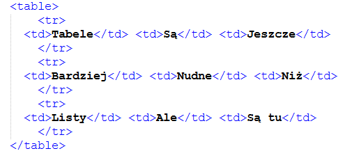

Powrót
Chyba najlepsza część strony (mojej). Chciałbym jeszcze powiedzieć że mój kolega robi osobną stronę, ale link do niej jest tutaj:
Znajduje się tu więcej rzeczy niż tylko o komputerach :)CSS
CSS to jest tak naprawdę druga podstawa stron. Aby go użyć, dodaj w znaczniku <head> znacznik <style>. Swoją drogą, normalnie < oraz > nie można użyć. Trzeba napisać < lub > (ciekawostka: & też nie. trzeba napisać &) CSS działa na prostej zasadzie. Dodajesz "body { }" a w klamrach na przykład background-color: bebebe (tego używam na tej stronie).
iframe'y
I nie, nie są to "invincibility frames" z gier ani ramki stworzone przez apple. Jest to coś takiego
jest to ta strona kolegi (tylko że parę szczegółów zmienia moja strona; może np. być inne tło).
Da się dzięki nim np. dodać tutorial na yt a potem go dać do ramki. Aby je dodać, użyj <iframe src="[daj adres strony]">
przyciski (ale bardzo podstawowe)
Przycisk działa na różne sposoby. Można dodać go używając <button>, ale żeby coś robił trzeba dodać onclick = "[coś]". Na razie jedyne co mogę polecić co nie jest zbyt ciężkie to alert: dodaje się <button onclick="alert('tekst')"> i tekst sam się pokaże.
Listy
Tabele
| Tabele | Są | Jeszcze |
| Bardziej | Nudne | Niż |
| Listy | Ale | Są tu |
A więc aby dodać tabelę w CSS trzeba dodać td { border: 1px solid black; }, a potem <table> a w środku <td> a jeszcze bardziej w środku <tr>. Jest to skomplikowane i trudne do wytłumaczenia według mnie więc po prostu dam tu zdjęcie:
A jak robić taki tekst?
Ja używam znaczników <p>, oraz klas. Aby dodać klasę do znacznika <p>, trzeba napisać <p class="test123"> i klasa się doda. W znaczniku <style> dodaje się .test123{ } a w klamrach inne rzeczy. W tym artykule dodałem klasę medium która ma font-size: 35px; i klasę graybg która ma background-color: 9c9c9c.
Przyciski (ale trochę bardziej zaawansowane)
W <head> dodajemy <script>. Tam dodajemy function funkcja() {} a w klamrach dodajemy document.getElementById("numer999"). Potem do znacznika p dodajemy id="numer999." Po prawej od document.getElementById dodajemy .innerHTML = "widzisz działa". Ja dodałem tam jeszcze przycisk ale to ciut bardziej skomplikowane.
tekst21
Co przyciski potrafią naprawdę?
To:
0
A więc to jest koniec mojej strony! Jedyne co zostało... to quiz!
Quiz
Powrót